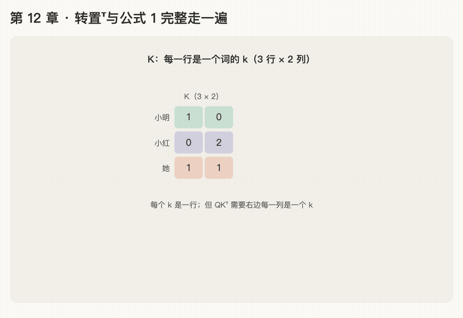

第 12 章 · 转置与公式 1 完整走一遍
本章回答：\(K^\top\) 右上角的 \(^\top\) 是什么？把 Q、K、V 代进公式 1，从头到尾怎么算？
讲解日期：2026-10-26 · 上一章：第 11 章 大写的 Q、K、V · 下一章：第 13 章 多头注意力
对应原文：materials/text/papers/attention-is-all-you-need-1706.03762.txt式 (1)，L175
本章缩写：Q / K / V = Query（查询）/ Key（键）/ Value（值）；\(d_k\)：k = key，每个 key 向量有几个数（64）；\(d_v\)：v = value，每个 value 向量有几个数（64）；softmax = soft（柔和的）+ max（取最大）：按大小分比例，不是只挑最大的；GPT = Generative Pre-trained Transformer（生成式预训练 Transformer）；CS336 = Stanford 课程 CS 336（Computer Science 336，Language Modeling from Scratch）；代码里的名字（PyTorch、nn.Linear等）见附录"PyTorch 对照"。全部缩写见 附录 · 缩写与术语表
讲解
第一步：矩阵乘矩阵的规则
第 10 章：向量乘矩阵 = 向量和矩阵的每一列各做一次点积。
推广一步：矩阵乘矩阵 = 左边的每一行，和右边的每一列，各做一次点积。 结果的第 i 行第 j 列 = 左边第 i 行 · 右边第 j 列。
\(QK^\top\) 想要的是：第 i 行第 j 列 = 第 i 个词的 q · 第 j 个词的 k。
- 左边 \(Q\)：每一行是一个 q ✓
- 右边需要：每一列是一个 k。但 \(K\) 里每个 k 是行，方向不对。
第二步：转置 \(^\top\) = 把表格翻过来，行变列
\(K^\top\) 读作"K 转置"（transpose）：原来的第 1 行变成第 1 列，第 2 行变成第 2 列……
\(K^\top\) 的三列依次是小明、小红、她的 k。3 行 × 2 列变成 2 行 × 3 列。
现在 \(Q\)（每行一个 q）乘 \(K^\top\)（每列一个 k），正好每个 q 和每个 k 都做一次点积，得到第 11 章那张 3 × 3 分数表。
形状小规则
\(Q\) 是 3 × 2，\(K^\top\) 是 2 × 3：左边的列数必须等于右边的行数（都是 \(d_k\)），因为做点积的两个向量必须一样长。结果是 3 × 3（词数 × 词数）。
练习与作答记录
题 1：把矩阵 \(\begin{bmatrix}1 & 2 & 3\\ 4 & 5 & 6\end{bmatrix}\) 转置，写出结果，它是几行几列？
第 1 次作答："2 列 3 行。" 形状 ✓（原来 2 行 × 3 列，转置后 3 行 × 2 列），但没写出具体结果，追问。
第 2 次作答（提示第 1 列已填好后）：第 2 列填 4，5，6 ✓
讲解（续）：公式 1 完整走一遍（只算"她"那一行）
用第 11 章的例子，\(d_k=2\)。四步：
- 打分：\(\mathbf q_{\text{她}}=[0,2]\) 和 \(K^\top\) 的每一列做点积。作答 [0, 4, 2] ✓（·小明 [1,0] = 0，·小红 [0,2] = 4，·她 [1,1] = 2）
- 缩放：除以 \(\sqrt{d_k}=\sqrt2\approx1.41\)。作答："缩放到 1 附近，都是合理的数值。" 目的 ✓，数值由讲解给出：[0, 2.83, 1.41]。补充：缩放让分数整体回到 ±1 的量级，不是每个都正好变成 1；个别分数仍可到 2～3，这正是"有重点"。
- 分比例：softmax([0, 2.83, 1.41])
| 词 | 缩放后分数 | \(e^{x}\) | 比例 |
|---|---|---|---|
| 小明 | 0 | 1 | 0.045 |
| 小红 | 2.83 | 16.94 | 0.769 |
| 她 | 1.41 | 4.10 | 0.186 |
| 合计 | 22.04 | 1 |
小红的比例：作答 0.78（有偏差），正确 0.769，验算 \(1-0.045-0.186=0.769\)。对照：不缩放时 [0,4,2] 的 softmax 小红约 0.867，缩放后 0.769，没有逼近 1。 4. 取信息：设三个词的 v 为 小明 [0,10]、小红 [10,10]、她 [5,5]，输出 \(=0.045\mathbf v_{\text{小明}}+0.769\mathbf v_{\text{小红}}+0.186\mathbf v_{\text{她}}\)。第 1 个位置：作答"8.5 左右"，接近；精确为 \(0+7.69+0.93=\mathbf{8.62}\)。第 2 个位置：\(0.45+7.69+0.93=\mathbf{9.07}\)。
"她"的新向量 [8.62, 9.07]，很接近小红的 v [10, 10]："她"主要取了小红的信息。
四步一览（"她"这一行）
| 步 | 公式里 | 结果 |
|---|---|---|
| ① 打分 | \(\mathbf q K^\top\) | [0, 4, 2] |
| ② 缩放 | \(\div\sqrt{2}\) | [0, 2.83, 1.41] |
| ③ 分比例 | softmax | [0.045, 0.769, 0.186] |
| ④ 取信息 | \(\times V\) | [8.62, 9.07] |
对每个词都做一遍，就是公式 1 一次算出的整张输出矩阵（每行一个词的新向量）。
动画演示：转置翻表格；公式 1 四步走一遍

可交互版：animations/12-transpose-formula.html（要能点按钮、拖滑块，需要用本地服务打开，见 animations/README.md"跑起来看"）。
怎么看：
- K 每一行是一个 k；转置后 \(K^\top\) 每一列是一个 k，颜色跟着走；
- 形状规则：(3 × 2) × (2 × 3)，中间的 2 相等，结果 3 × 3；
- "她"那一行四步：打分 [0, 4, 2] → 除以 √2 → softmax [0.045, 0.769, 0.186] → 乘 V 得 [8.62, 9.07]；
- 滑块：改"她"的 q = [0, a]，四步一起重算。
口诀
矩阵乘矩阵：左边取行，右边取列，各做一次点积；
转置就是行变列，K 翻过来每列一个 k，才能和 Q 对上；
左边列数等于右边行数，n × d 乘 d × n 得 n × n；
公式 1 四步：打分、缩放、softmax、乘 V。
本章复习卡片
R22 转置 · R23 公式 1 四步完整走一遍（见 ../review.md）
附录 · 延伸阅读
留给以后深入学习用，不影响本章主线。★ 是建议先读的。
- 本地论文的文本版在materials/text/papers/，表里的行号就是指这个文本版。
- CS336 handout 在cs336-spring2025/materials/text/cs336_spring2025_assignment1_basics.txt。
推荐阅读
| 读什么 | 读哪里 | 读它为了什么 |
|---|---|---|
| ★ Attention Is All You Need | 式 (1)，L175 | 公式 1 原文 |
★ The Annotated Transformer（本地 materials/code/annotated-transformer/repo/the_annotated_transformer.py） |
def attention，L519 |
公式 1 写成代码只有几行，逐行对照 |
nanoGPT（本地 materials/code/nanoGPT/repo/model.py） |
class CausalSelfAttention，L29 |
实际 GPT 里的写法（带因果 mask，第 17 章） |
| CS336 a1 handout | §3.5.4，Problem (scaled_dot_product_attention) | 作业里你要亲手实现它 |
| Formal Algorithms for Transformers | Algorithm 4 Attention | 带 Mask 的完整伪代码 |
数学原理
- 转置：行变列、列变行，第 i 行第 j 列的数换到第 j 行第 i 列。
- 乘积的转置：先转置再反过来乘，\((AB)^\top = B^\top A^\top\)。推导公式时常用。
- 形状检查：每一步都检查形状能不能乘、结果是几行几列，这是读论文和写代码时最实用的习惯。
- softmax 按行做：每一行是一个词对所有词的分数，各行分别变成比例。
公式清单
| 公式 | 意思 |
|---|---|
| \((A^\top)_{ij} = A_{ji}\) | 转置 |
| \((AB)^\top = B^\top A^\top\) | 乘积的转置 |
| \(\text{Attention}(Q,K,V)=\text{softmax}(\frac{QK^\top}{\sqrt{d_k}})V\) | 公式 1 |
| \((n \times d_k)(d_k \times n) = (n \times n)\) | 分数表的形状 |
| \((n \times n)(n \times d_v) = (n \times d_v)\) | 输出的形状：每个词一个新向量 |
PyTorch 对照：把本章的数字用代码算一遍
代码在仓库本地
transformer-deep-dive/solutions/chapter-code/ch12_transpose_formula.py，配套测试tests/test_ch09_13.py（在线版不带代码文件，下面摘了关键几行）。Mac 上直接能跑，不需要 GPU：
bash cd transformer-deep-dive/solutions/chapter-code uv run python ch12_transpose_formula.py
讲义 ↔ 代码：
| 讲义 | 公式 / 说法 | PyTorch 写法 | 跑出来 |
|---|---|---|---|
| 转置 | \(K^\top\)：行变列 | K.T |
(3, 2) → (2, 3) |
| 形状对不上 | 左边列数 ≠ 右边行数 | Q @ K |
报错：shapes cannot be multiplied (3x2 and 3x2) |
| ① 打分 | \(\mathbf q K^\top\) | Q @ K.T |
她：[0, 4, 2] |
| ② 缩放 | \(\div\sqrt{2}\) | / math.sqrt(d_k) |
[0, 2.83, 1.41] |
| ③ 分比例 | softmax | torch.softmax(..., dim=-1) |
[0.045, 0.768, 0.187] |
| ④ 取信息 | \(\times V\) | p @ V |
[8.61, 9.07] |
| 自带的公式 (1) | \(\text{softmax}(QK^\top/\sqrt{d_k})V\) | F.scaled_dot_product_attention(q, k, v) |
和手写一样 |
关键几行：
scores = Q @ K.T
p = torch.softmax(scores / math.sqrt(d_k), dim=-1)
out = p @ V # 公式 (1)，三行
F.scaled_dot_product_attention(Q[None], K[None], V[None])[0] # 自带版，结果一样
代码里才看得到的：
- 讲义 0.769、8.62，代码 0.768、8.61：讲义手算时先把 2.828 四舍五入成 2.83、1.414 写成 1.41，再往下算，误差一路带到了最后；代码全程不四舍五入。两个都对，差在第三位小数。
- 看懂报错：
mat1 and mat2 shapes cannot be multiplied (3x2 and 3x2)：左边 3 × 2 的列数 2 和右边 3 × 2 的行数 3 对不上。以后写 attention，十个错里有九个是形状。 Q[None]：在最前面加一维，变成 1 × 3 × 2（1 句话）。自带函数要求最前面是"第几句"，最后两维才是"词 × 数"。